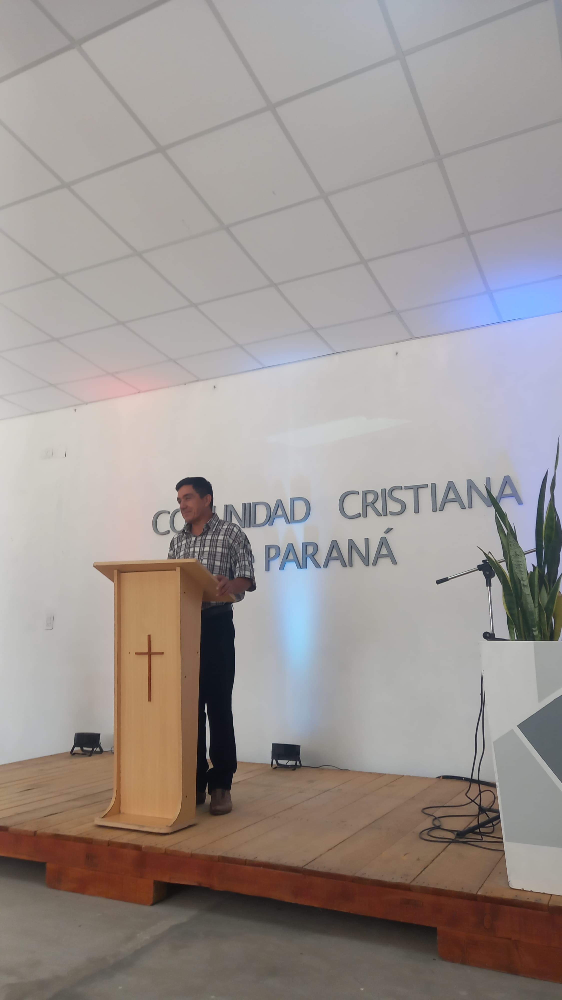

SCHEDULES
Comunidad Cristiana Church of Paraná, born more than 25 years ago established in the city, with the vision of renewal and restoration we have walked all these years.
Renewal: Because it brought a new freshness in the communion and expressions of love among the saints, a greater freedom and depth in the worship of God, the experience of a practical Christianity, a joyful emphasis on the gifts and manifestations of the Spirit.
Restoration: The Primitive Church was a model to observe and imitate. In that context, the Kingdom of God, or rather the government of God in the lives of people and the congregation was the central axis of this restoration of truth. It was also vital the rediscovery of God's Eternal Purpose
"Just as He chose us in Him before the foundation of the world, that we should be holy and without blame before Him in love, having predestined us to adoption as sons by Jesus Christ to Himself, according to the good pleasure of His will.
Ephesians 1: 4-23"
God's Eternal Purpose: "A family of many sons like Jesus
Ephesians 1: 4-5"
LOCATION
Pastors|Deacons

Claudio Cardozo
Pastor

Ariel Gomez
Deacon
Orlando Gabilan
Deacon
EVENTS


Youth Camp
from 4/3 to 7/3
Camping los paraisos